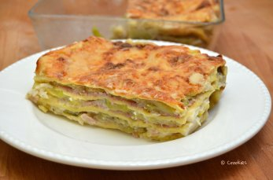

Lasagnes courgettes jambon
Ingredients
4×
- 2 courgettes
- huile d'olive
- 1 gousse d'ail
- sel
- poivre
- béchamel (50cl de lait)
- 1 saint-marcellin
- basilic
- plaques de lasagnes
- 3 tranches de jambon
- fromage râpé

Préparation
Étape 1
Laver et couper 2 courgettes. Les rissoler avec 1 cac d’huile d'olive et 1 gousse d'ail, sel et poivre. Cuire 15min à feu doux.
Étape 2
Préparer une béchamel (50cl de lait) et y fondre 1 saint-marcellin. Ajouter du basilic et les courgettes égouttées.
Étape 3
Alterner plaques de lasagnes, béchamel et 3 tranches de jambon. Finir par la sauce et du fromage râpé.
Étape 4
Cuire 40min à 180ºC.